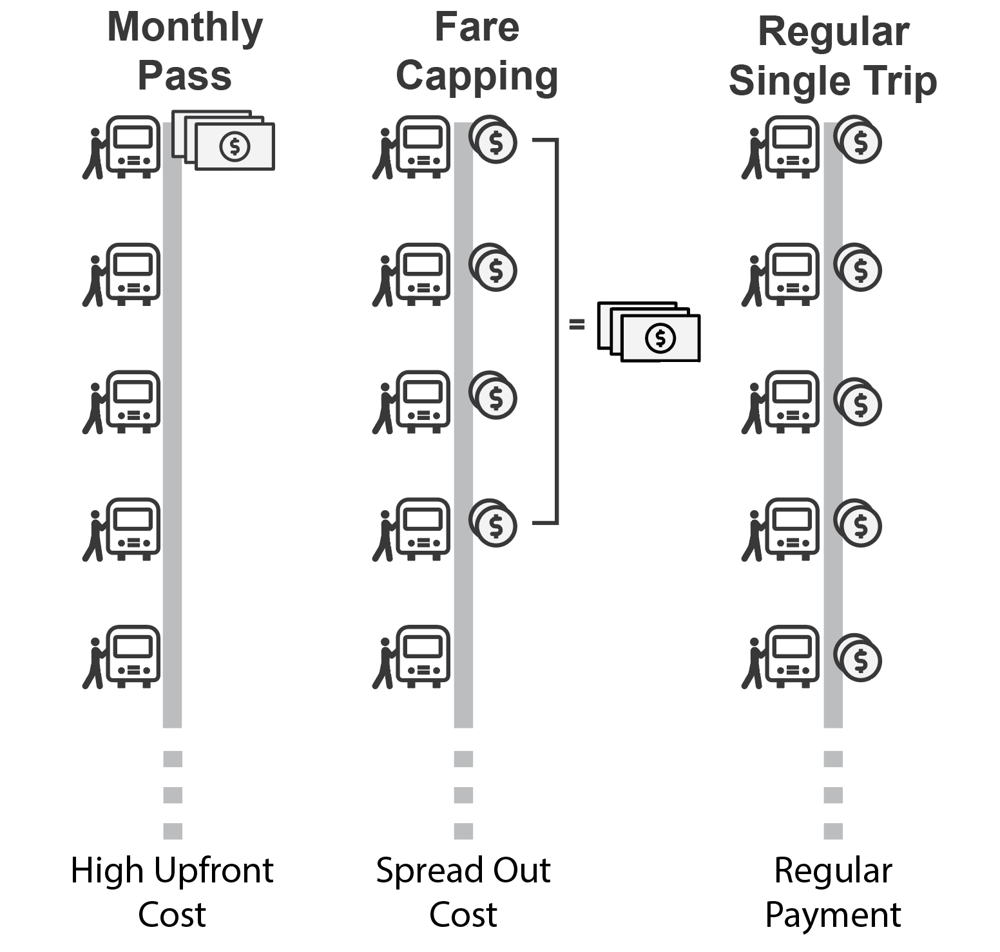
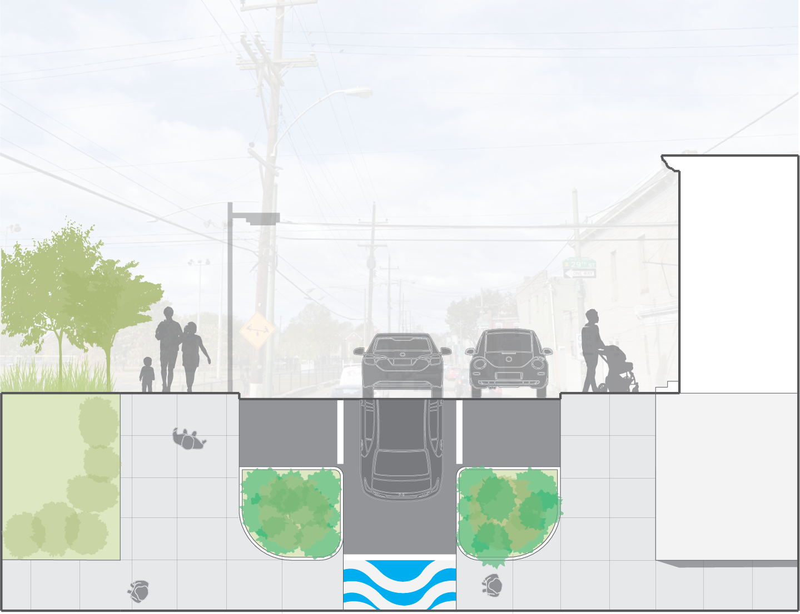
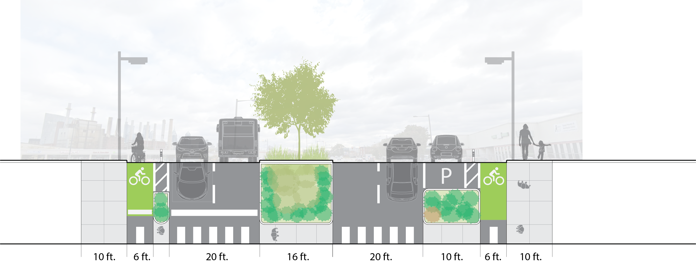

This page presents a collection of graphics I made as a graduate student and a research assistant. These graphics were made using a combination of ArcGIS, Adobe Illustrator, and Adobe Photoshop.
Workshop
Workshop is a semester long course in the program where we work as teams to draft a comprehensive plan for a neighborhood in Philadelphia. Even though the course is collaborative in nature, I played a large role in creating graphics. The graphics in this section were made by me with suggestions and inputs from other team members.
Existing Condition: Bus
Fare Capping
This graphic was created to explain the concept of fare capping.
A fare system with this mechanism caps the total amount of payment so that frequent riders pay the same amount
per month or week as people who purchased a pass.
This allows frequent riders who could not pay for a monthly or weekly pass to also benefit from the reduced cost of riding transit.

Fare capping can be structured in a way when an individual has paid
the price equivalent to that of a monthly pass,he or she effectively
earn the monthly pass for the remaining days of the month.
This spreads out the cost of a transit pass and makes it more accessible.
Street Sections
The following street sections illustrates proposed streetscape improvements to create a more pedestrian friendly environment.
When analyzing the existing condition,
we noticed that the community is very car oriented with wide streets and poorly marked pedestrian crossings.
We proposed interventions such as curb extension at intersections, parking protected bike lanes.
The community is also bisected by a freight rail viaduct running above a street.
For this space, we proposed that part of the street can be closed for community events that helps activate the space
and connects both sides of the community.

This section depicts a common one-way street in the community.
In order to slow traffic we proposed curb extension and painted crosswalks.

This section illustrates an arterial road with proposed bike
lanes and expanded median, making it easier to cross for pedestrians.
Research
I have been working as a research assistant since September 2019. In this position, I often have to present my work graphically through graphs or maps. My work process mainly includes analyzing data in R and ArcGIS, and polishing graphics in Adobe Illustrator.
Transit Choice Rider
A project I am working on as a research assistant is investigating the characteristics of choice rider.
Using the Household Travel Survey conducted by DVRPC (Philadelphia region’s metropolitan planning organization)
and other environmental inputs such as transit quality and land use index,
I built a predictive model on people’s probability of utilizing transit.
I created this graphic to illustrate a sample tour taken by an individual with close to 50% probability
of using transit instead of a private vehicle.

This individual took transit as well as walked for everyday shopping and personal business.
This graphic was made using a combination of ArcGIS, and Adobe Illustrator.